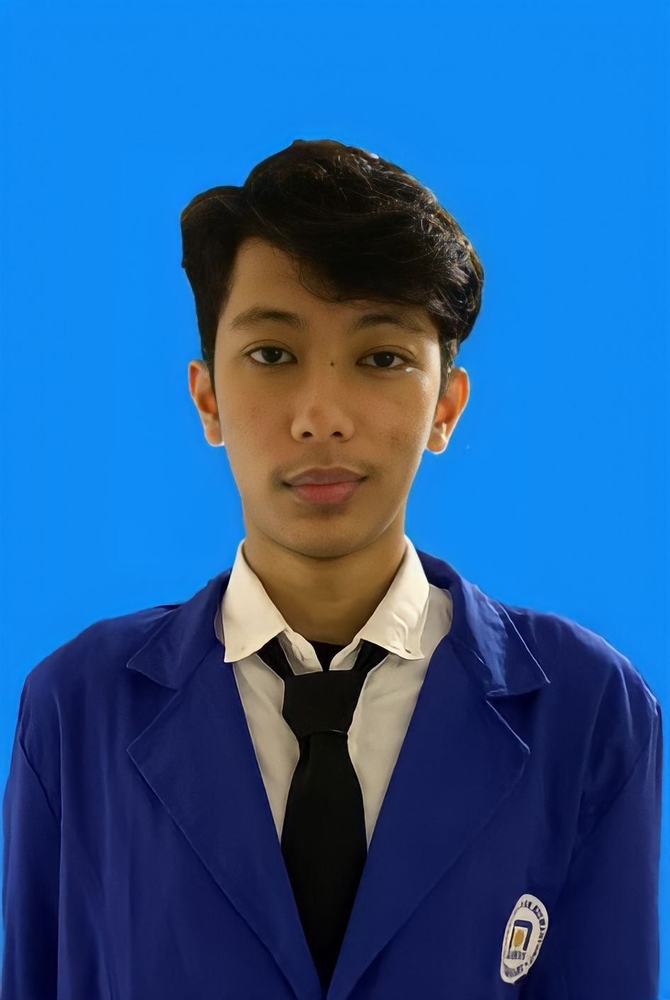
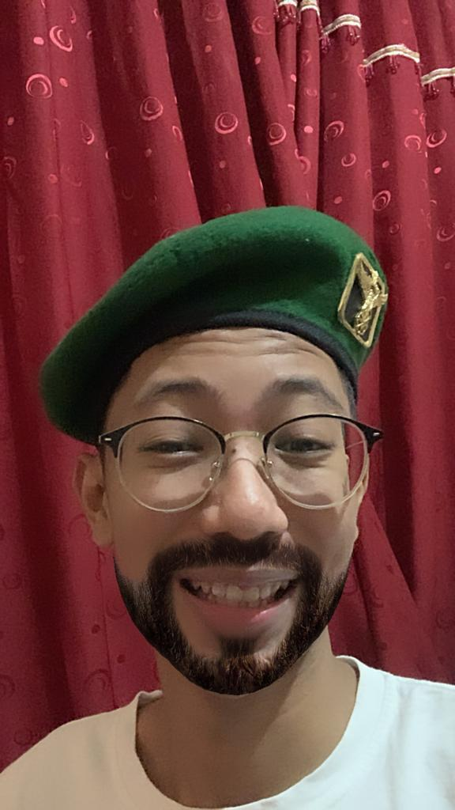

My Galery

Foto yang pertama, merupakan foto saya menggunakan jas almamater Kampus kebanggaan saya yaitu Kampus Udinus. Foto ini saya gunakan juga untuk foto profil kartu ujian dan juga di siadin. Jas almamater ini saya ambil melalui ruang BIAK.

Foto kedua, merupakan foto saya di Kota Lama Semarang. Foto ini saya ambil pada saat malam hari, seusai pulang kuliah dan mengerjakan tugas bersama teman-teman.

Foto yang ketiga, merupakan foto yang saya ambil di salah satu cafe. Foto ini saya gunakan untuk twibbon Dinus Inside 2022 yang lalu. Sungguh amat menyenangkan bila acara tersebut kembali terulang lagi.

Foto yang keempat, merupakan foto yang saya ambil bersama teman-teman kampus saya. Foto ini saya ambil di salah satu carnaval malam yang ada di Kota Semarang. Sungguh amat menyenangkan carnaval pada saat tersebut.

Foto yang kelima, merupakan foto yang saya ambil di toilet kaca Kampus Udinus saat jam mata kuliah telah berakhir.
Dan foto yang terakhir, merupakan foto yang saya ambil ketika saya sedang gabut dan iseng menggunakan baret TNI almarhum kakek.
Kembali Ke Halaman Utama